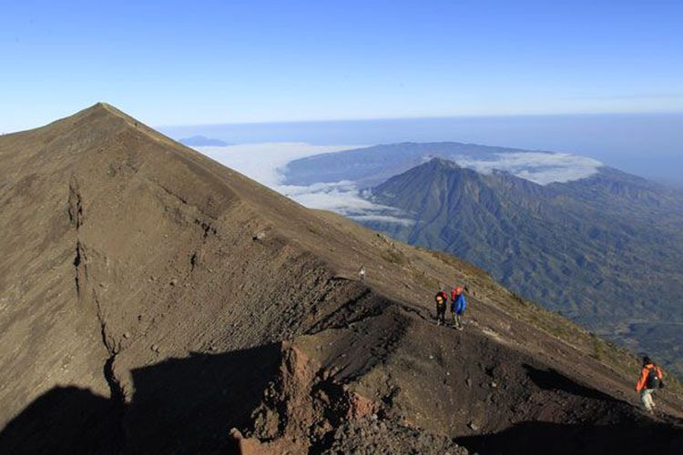

Kenapa Gunung Agung Tak Seaktif Merapi?
LUTFY MAIRIZAL PUTRA
KabarKabur.com -26/09/2017, 16:44 WIB

Tim Ekspedisi Cincin Api Kompas menuruni puncak Gunung Agung (3.142 mdpl), Bali, Kamis (6/10/2011). Gunung stratovolcano ini terakhir meletus dahsyat 1963 menelan korban jiwa 1.148 orang. Latar belakang di kejauhan terlihat kaldera Gunung Batur.
KabarKabur.com - Gunung Agung di Karangasem, Bali telah ditetapkan berada dalam status “awas” karena peningkatan aktivitas.
Warga di sektor barat daya, selatan, tenggara, timur laut, dan utara seluas 12 Km telah diungsikan untuk menghindari korban jiwa.
Peningktan aktivitias ini terjadi setelah Gunung Agung tertidur dalam waktu lebih dari setengah abad.
Erupsi terakhirnya terjadi pada 18 Februari 1963 dan berakhir hingga 27 Januari 1964. Korban jiwa mencapai 1.148 orang dan 296 orang mengalami luka-luka.
Bila dibandingkan dengan gunung seperti Merapi, jeda erupsi gunung Agung cukup lama. Apa sebabnya?
Pakar vulkanologi Surono mengatakan, lamanya erupsi dipengaruhi oleh pengisian kantung magma.
Dalam kasus peningkatan aktivitas Gunung Agung, kantung magma yang terisi berbarengan dengan kantung magma Gunung Batur.
“Bisa terjadi kantung magma Gunung Agung itu bersamaan dengan Gunung Batur, kan berjejeran,” kata Surono saat dihubungi, Senin (25/9/2017).
Dengan kantung magma yang besar, waktu yang dibutuhkan untuk mengisinya memang cukup lama.
Saat naik, magma lantas terbelah, menjadi dua, ke Gunung Agung dan Gunung Batur.
Tak semua kantung magma gunung berapi dalam. Menurut Surono, kondisi itu terjadi di Gunung Merapi dengan kedalam kantung magma "hanya" sekitar 1.500-2.000 meter dari puncak kawah.
Entah kantung magmanya besar atau kecil, gunung api biasanya butuh waktu bertahun-tahun untuk aktif lagi.
Pasalnya, dengan sifat magma Indonesia yang kental, butuh waktu untuk mengisi penuh kantung magma.
“Perlu tenaga sangat besar untuk membuat magma migrasi dari kantung yang lebih bawah ke kantung yang lebih dangkal atau yang dekat dengan kawah,” kata Surono.
Magma yang ingin keluar akan membentuk rekahan. Pergerakan magma juga ditandai dengan adanya gempa vulkanik. Pergeseran ini juga disebut dengan migrasi fluida. Selain magma, uap dan gas juga ikut bergerak.
“Atau bisa campuran dari ketiga itu. Bergerak menuju ke permukaan, menimbulkan rekahan dan terjadi gempa vulkanik,” kata Surono.
Menurut Surono, dari gempa vulkanik dapat dipelajari kandungan yang telah mendekat ke permukaan. Setiap ketiga fluida itu memiliki letusan yang berbeda.
“Misalnya kalau dominan keretakan di permukaan itu adalah uap, paling letusanya uap nantinya,” kata Surono.
penulis :Lutfy Mairizal Putra
Editor :Yunanto Wiji Utomo